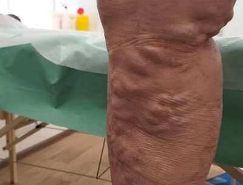

Una famosa blogger è quasi morta a causa di vene varicose
Anna Stone, la famosa blogger di IG è quasi morta a causa di un comune problema, ossia vene varicose. La ragazza, invece di fare qualcosa per le sue vene varicose, ignorava il disturbo.
Lei, come tutti i beauty-blogger, era interessata al suo aspetto, e il disturbo micidiale - vene varicose, non era grave secondo Anna. Questo è andato avanti sino a quando la ragazza è stata ricoverata in ospedale.

Quì Anna è in ospedale
Non ho avuto paura e mi sono persino abituata a vivere con le vene varicose. Non potevo indossare quello che volevo veramente, in spiaggia mi sentivo in imbarazzo con le mie vene nere. Quando mi facevano male le gambe, cosa che accadeva molto spesso, rifiutavo gli inviti degli amici e andavo a casa invece di rilassarmi e divertirmi fuori
È questo atteggiamento che porta le persone a morire di vene varicose.
Gli esperti continuano a ripetere una semplice verità, che le vene varicose non spariscono da sole, che le vene varicose sono una malattia mortale che causa la morte di molte migliaia di persone nel mondo. Che ai primi segni di questo disturbo dovresti iniziare a combattere le vene varicose.
Invece coloro che sono geneticamente predisposti dovrebbero fare tutto il possibile per prevenire le vene varicose.
I primi sintomi di vene varicose: pesantezza alle gambe, gonfiore, formicolio e prurito, rapido affaticamento delle gambe e dolore.
Le vene varicose possono provocare coaguli di sangue, ulcere trofiche, morte improvvisa e dolorosa
L'ulcera trofica viene causata dalle vene varicose
Vene varicose trascurate
Le vene varicose portano a coaguli di sangue che possono rompersi in qualsiasi momento, raggiungere i polmoni e bloccare l'arteria polmonare, e anche causare un attacco di cuore se tale coagulo raggiunge il cuore.
Vene varicose trascurate
Vene varicose sono un pericolo quotidiano invisibile
Inoltre, con questo test potrai capire se hai o meno le vene varicose
Controlla se hai vene varicose
1. Devi rinunciare ai tuoi piani a causa del dolore alle gambe?
2. Indossi spesso le scarpe con i tacchi alti?
3. Tuoi genitori soffrono di vene varicose?
4. Presenza di rete venosa sulle gambe, oscuramento delle vene
5. Segni la presenza di sintomi invisibili di vene varicose
Il dolore alle gambe quando si cammina
I crampi notturni
Il prurito
Il gonfiore delle gambe
La sensazione di pesantezza alle gambe
Il formicolio
6. Quanto velocemente le tue gambe si stancano quando cammini?
7. Provi dolore alle gambe dopo una giornata di lavoro?
Risultato:
Attenzione! Il tuo risultato suggerisce che dovresti occuparti della salute delle tue gambe il più presto possibile e iniziare a combattere le vene varicose. Questo è l'unico modo per proteggere la tua salute e prevenire gravi e pericolosi problemi legati alle vene varicose.
Risultato:
Attenzione! Il tuo risultato suggerisce che dovresti occuparti della salute delle tue gambe il più presto possibile e iniziare a combattere le vene varicose. Questo è l'unico modo per proteggere la tua salute e prevenire gravi e pericolosi problemi legati alle vene varicose.
Come combattere vene varicose?
La blogger Anna Stone si è rivolta agli esperti solo quando le sue gambe hanno cominciato a farle male costantemente. Tanto che si muoveva per la casa piangendo dal dolore.
Il dolore era orribile, le gambe mi pulsavano. Pensavo che fossero in fiamme! Non riuscivo ad alzarmi dal letto, singhiozzavo e urlavo dal dolore. Non credevo che le vene varicose potessero portare a questo!
Nell' ospedale, la ragazza è stata collegata ad una flebo e le è stato ordinato di assumere vari prodotti per eliminare il dolore Il dolore è passato, ma secondo Anna, si sentiva molto male a causa di questi rimedi. Il suo stomaco le dava tanti problemi. Ed è tutto a causa delle vene varicose a cui Anna non ha fatto molta attenzione.
Col tempo, il dolore è scomparso. Ma gli esperti hanno detto che il dolore tornerà perché le vene varicose hanno già raggiunto il punto in cui il dolore diventa cronico.
All'inizio Anna decise di sottoporsi all'intervento, ma dopo aver appreso le controindicazioni e il periodo di recupero, rifiutò immediatamente di sottoporsi ad esso.
Le conseguenze e il recupero da un intervento chirurgico rappresentano un periodo molto lungo e doloroso
Anna voleva trovare un rimedio moderno e sicuro che aiutasse a sconfiggere le vene varicose.
Allo stesso tempo nell'ospedale ha trovato un'intervista con un'esperta, che si è occupata della lotta contro le vene varicose praticamente per metà della sua vita, l'esperta ha parlato di un nuovo prodotto che rivoluzionerà il modo di combattere le vene varicose.
Angela Izzo, l'esperta di vene varicose
"La maggior parte dei rimedi hanno un obiettivo ristretto: alleviare il dolore, lenire il prurito, aiutare con il gonfiore. Questo approccio non è efficace perché le vene varicose richiedono un trattamento completo. Questo è esattamente l'effetto che ha . Questo gel aiuta ad attivare la circolazione del sangue nelle gambe, drenando il sangue stagnante nelle vene. E quando i tessuti ricevono di nuovo tutti i nutrienti, i crampi, il gonfiore, la rete venosa, il dolore e la sensazione di pesantezza alle gambe spariscono".
Il prodotto ha una composizione eccellente con un insieme di estratti vegetali che sono noti per il loro effetto curativo nelle vene varicose.
Anna ha riletto l'articolo più e più volte e poi ha trovato il produttore di questo prodotto e ha ordinato due confezioni. Ha ricevuto il gel tre giorni dopo e ha iniziato a usarlo il giorno stesso. Allo stesso tempo ha buttato via tutte le scarpe scomode anche se erano belle, ha fatto il massaggio contro le vene varicose alle gambe.
Le gambe di Anna dopo 1 ciclo di trattamento con
Il prodotto mi ha aiutato! Non solo sono stata in grado di sbarazzarmi della rete venosa, ma anche di dimenticare i sintomi invisibili delle vene varicose.
Il gonfiore, il dolore, il prurito e la stanchezza sono spariti dalla mia vita!
Non mi vergognavo più dei miei piedi, potevo correre quanto volevo e camminare per ore. Ho anche potuto tornare a ballare, cosa che ho dovuto abbandonare quando mi sono venute le vene varicose.
Dopo essersi liberata delle vene varicose la vita della ragazza e le sue foto su IG si sono trasformate, poteva indossare ed essere fotografata negli abiti che voleva senza vergognarsi per l'aspetto delle sue gambe
Adesso può fare lunghe passeggiate, jogging e persino ballare
Anna ha dichiarato che il gel ha alcuni importanti vantaggi rispetto ad altri prodotti per vene varicose:
- Comodo Si assorbe rapidamente, non unge, ha un profumo neutro
- Efficace Aiuta ad alleviare il dolore alle gambe in pochi minuti
- Sicuro Dopo solo 1 ciclo di trattamento, le vene delle gambe si sono schiarite e i sintomi invisibili delle vene varicose sono scomparsi
Le vene varicose sono pericolose e possono davvero uccidere le persone
Le vene varicose non dovrebbero essere considerate un problema cosmetico. Al primo segno di questa malattia si dovrebbe agire immediatamente, altrimenti le vene varicose progrediranno rapidamente, il dolore diventerà cronico, le vene si scuriranno e diventeranno goffrate, si formeranno coaguli di sangue e appariranno ulcere trofiche sulle gambe.
Se sai che significa avere le vene varicose non per sentito dire, ma per esperienza personale, allora il prodotto aiuterà a restituire alle tue gambe bellezza, salute e forza, come ha aiutato me
Puoi ordinare compilando il modulo d'ordine, che è ancora più facile rispetto agli altri negozi.
Compilare il modulo
Rispondere alla chiamata dell'operatore per precisare i dettagli della consegna
È possibile eliminare le vene varicose, non lasciare nulla al caso! Buona fortuna!
ATTENZIONE! Fino a (compreso) per il prodotto contro le vene varicose c'è uno sconto del 50%. La quantità di confezioni a prezzo speciale è limitata! Affrettati a ordinare la tua confezione!
Confezioni rimanenti al momento attuale: 24 confezioni
Condizioni di consegna di :
Residenza in {{location.country_name}} (in questo momento la promozione si applica solo ai residenti di questo paese)
Età pari o superiore ai 40 anni (questo aiuterà a fornire il gel alla parte più vulnerabile della società)
Un ciclo di trattamento a persona (la misura neccessaria per combattere i rivenditori)
Commenti
Donna
Bologna
Questo gel è una vera rivoluzione, ha cambiato la mia vita. Le vene varicose mi hanno trasformato da una donna attiva a una casalinga. Dopo il lavoro tornavo sempre a casa invece di uscire con gli amici. Era molto triste. La situazione si è cambiata grazie a . Ho fatto un ciclo di trattamento e non c'era più alcuna traccia del mio dolore alle gambe.
Benedetta
Roma
Anche a me piace questo prodotto, si assorbe rapidamente e non macchia i miei vestiti.
Bibiana
città di Campobasso
Allevia il dolore in pochi minuti. Sono contenta.
Maika
città di {{location.name}}
Sono rimasti altre confezioni scontate?
Folco
Milano
Sì, lo sconto si applica ancora, ho appena ordinato una confezione per mia moglie.
Deborah
Orvieto
Ho comprato un gel del genere da un mio conoscente, ma il prezzo era molto più alto. Sarebbe stato meglio se l'avessi ordinato io personalmente. Il modulo è abbastanza facile da compilare.
Renato
città di {{location.name}}
Ottimo prodotto per le vene varicose, ho iniziato ad usarlo per fare il massaggio alle gambe e ho dimenticato completamente il dolore.
Irene
Pescara
La conosco! La seguo e non avrei mai immaginato che avesse le vene varicose. Meno male che se n'è sbarazzata e ora pubblica delle foto bellissime, riprendendosi non solo sopra la vita.
Bernardo
Firenze
Mia moglie è riuscita a sbarazzarsi delle vene varicose con questo gel. Ottimo prodotto.
Elsa
Napoli
L'ho appena ordinato! Con un grande sconto!
Jelena
Palermo
Appena mi sono anche liberata delle vene varicose ho avuto una nuova vita, ho anche ottenuto una promozione al lavoro, perché prima tutto quello a cui potevo pensare al lavoro era di andare a casa, visto che le gambe mi facevano così male. Adesso è tutto perfetto.
Danuta
città di {{location.name}}
aiuta. Lo consiglio.
Antimo
Firenze
Lavoro come cameriere, i piedi mi fanno terribilmente male la sera, ma grazie a il dolore è sparito
Ellen
Pisa
Adoro questa ragazza! Peccato che si è lasciata con il suo fidanzato ((((
Grazie! La tua recensione è stata sottoposta a moderazione.


Commenti
Donna
Bologna
Questo gel è una vera rivoluzione, ha cambiato la mia vita. Le vene varicose mi hanno trasformato da una donna attiva a una casalinga. Dopo il lavoro tornavo sempre a casa invece di uscire con gli amici. Era molto triste. La situazione si è cambiata grazie a . Ho fatto un ciclo di trattamento e non c'era più alcuna traccia del mio dolore alle gambe.
Benedetta
Roma
Anche a me piace questo prodotto, si assorbe rapidamente e non macchia i miei vestiti.
Bibiana
città di Campobasso
Allevia il dolore in pochi minuti. Sono contenta.
Maika
città di {{location.name}}
Sono rimasti altre confezioni scontate?
Folco
Milano
Sì, lo sconto si applica ancora, ho appena ordinato una confezione per mia moglie.
Deborah
Orvieto
Ho comprato un gel del genere da un mio conoscente, ma il prezzo era molto più alto. Sarebbe stato meglio se l'avessi ordinato io personalmente. Il modulo è abbastanza facile da compilare.
Renato
città di {{location.name}}
Ottimo prodotto per le vene varicose, ho iniziato ad usarlo per fare il massaggio alle gambe e ho dimenticato completamente il dolore.
Irene
Pescara
La conosco! La seguo e non avrei mai immaginato che avesse le vene varicose. Meno male che se n'è sbarazzata e ora pubblica delle foto bellissime, riprendendosi non solo sopra la vita.
Bernardo
Firenze
Mia moglie è riuscita a sbarazzarsi delle vene varicose con questo gel. Ottimo prodotto.
Elsa
Napoli
L'ho appena ordinato! Con un grande sconto!
Jelena
Palermo
Appena mi sono anche liberata delle vene varicose ho avuto una nuova vita, ho anche ottenuto una promozione al lavoro, perché prima tutto quello a cui potevo pensare al lavoro era di andare a casa, visto che le gambe mi facevano così male. Adesso è tutto perfetto.
Danuta
città di {{location.name}}
aiuta. Lo consiglio.
Antimo
Firenze
Lavoro come cameriere, i piedi mi fanno terribilmente male la sera, ma grazie a il dolore è sparito
Ellen
Pisa
Adoro questa ragazza! Peccato che si è lasciata con il suo fidanzato ((((
CON UNO SCONTO